INTRODUZIONE
Chi abbia percorso le terre di Ellan sa bene quanto il nostro mondo sia ricco di vita. Dalle pianure ghiacciate delle Icelands alle foreste meridionali, dalle montagne dei Reami ai grandi fiumi, ogni regione ospita animali che hanno imparato a prosperare nel proprio ambiente.
Alcuni sono tanto comuni da passare inosservati: volpi, cervi, lupi, piccoli roditori e innumerevoli specie di uccelli. Altri, come i maestosi roc, i grifoni o i minuscoli rugginofaghi, sono forse più sorprendenti, ma non per questo meno naturali.
In queste pagine ho raccolto osservazioni sulle creature più caratteristiche di Ellan, sulle loro abitudini e sui rapporti che intrattengono con le popolazioni che condividono i loro territori. Non pretendo di descrivere ogni animale esistente: un simile lavoro richiederebbe molti più volumi.
Spero piuttosto che queste note aiutino il viaggiatore a comprendere ciò che incontra e ricordino anche al lettore più esperto una semplice verità: nessuna creatura esiste isolata dal mondo che la circonda.
LE ICELANDS — LE GRANDI PIANURE
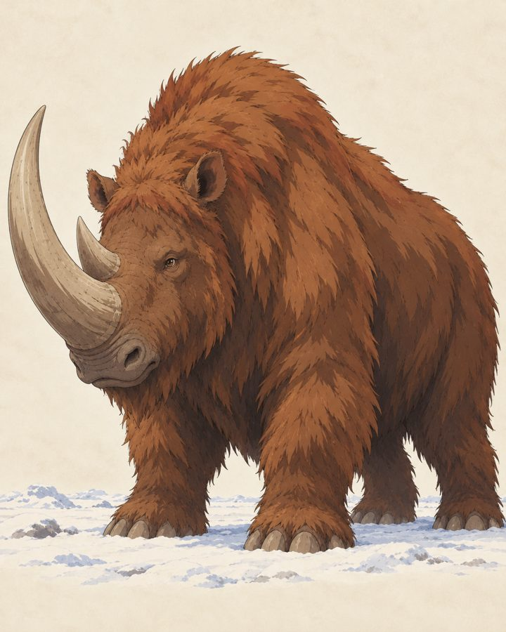
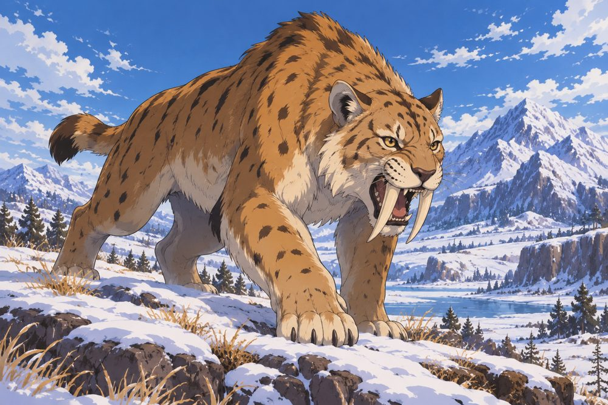
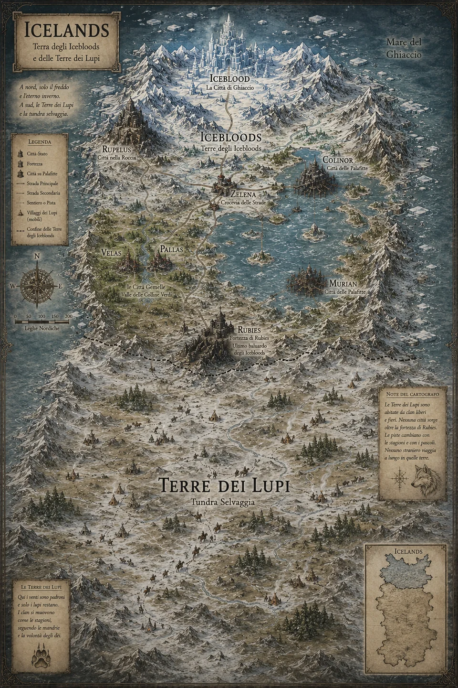
Chi immagina le Icelands come un'immensa distesa di ghiaccio non ha mai percorso le loro pianure meridionali. Qui, nelle brevi stagioni più miti, la terra si copre di erbe resistenti e la vita si manifesta con una forza che sorprenderebbe molti viaggiatori.
Immense mandrie di mammut attraversano queste terre seguendo percorsi conosciuti da innumerevoli generazioni. I loro corpi massicci e il folto mantello li proteggono dai venti gelidi, mentre le lunghe zanne permettono loro di liberare dalla neve la vegetazione di cui si nutrono.
Non sono soli. Rinoceronti lanosi, grandi cervi dalle corna imponenti e altri erbivori condividono le pianure, ciascuno con le proprie abitudini
Dove si radunano tante prede, inevitabilmente arrivano i predatori. Fra questi vi sono i terribili smilodonti, grandi felini dalle lunghe zanne, capaci di abbattere animali assai più grandi di loro.
Eppure sarebbe un errore considerare queste pianure soltanto un luogo di pericoli: qui ogni animale, dal più piccolo roditore al più imponente mammut, occupa il proprio posto nel continuo alternarsi delle stagioni.
Nota per il giocatore — La fauna delle grandi pianure delle Icelands ricorda quella della Terra durante il Pleistocene, l'epoca dei mammut e degli altri grandi mammiferi dell'era glaciale. Per immaginare questi animali si possono utilizzare ricostruzioni paleontologiche realistiche.
LE TRIBÙ DEI LUPI
Fra le popolazioni delle Icelands, nessuna suscita nei Reami tanti timori quanto le tribù Noren che vengono chiamate Lupi. Ho imparato, però, che la fama di un popolo non sempre racconta il modo in cui vive.
I Lupi percorrono queste terre a piedi durante tutto l'anno, seguendo le migrazioni e le stagioni. Accanto alle tribù si muovono branchi di lupi autentici: animali selvatici, mai addomesticati, che scelgono di condividere il cammino e spesso anche la caccia.
Questo legame non è quello fra un padrone e il suo cane. È una convivenza, costruita nel tempo, fra cacciatori che hanno imparato a riconoscersi e a rispettare le rispettive abitudini.
Quando un lupo muore durante una battuta, la sua pelle può essere indossata dai Noren come segno di onore e memoria, non come un trofeo. Confesso che mi ha colpito scoprire tanta considerazione per i compagni animali proprio presso un popolo che altri descrivono soltanto con paura.
Nota per il giocatore — «Lupi» con la maiuscola indica le tribù Noren; «lupi» indica gli animali. I branchi che accompagnano i Noren sono e rimangono animali selvatici, non lupi domestici o cavalcature.
ICEBLOOD — LE ACQUE FRA I GHIACCI
Chi raggiunge Iceblood scopre che anche il ghiaccio ha i suoi confini. I grandi laghi interni sono salmastri, comunicano fra loro e raggiungono il mare attraverso i fiordi. In alcune zone l'acqua si chiude sotto il gelo; altrove rimane libera, permettendo alla vita di continuare.
Sulle rive ho osservato foche, orsi polari e pinguini. Questi ultimi abitano tanto le coste marine quanto le sponde dei laghi. È un paesaggio nel quale la presenza dell'acqua, più ancora della sola temperatura, decide dove ciascun animale può vivere.
Nota per il giocatore — A Iceblood orsi polari e pinguini condividono alcuni ambienti. Sulla Terra provengono invece da regioni polari differenti: gli orsi polari dall'Artico e i pinguini dall'emisfero australe.
I JORM — I VERMI DEL GELO
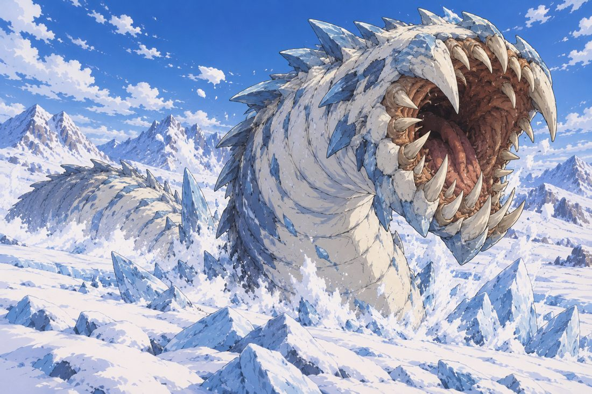
Vi sono creature che sarebbe difficile descrivere senza sembrare un narratore di leggende. I Jorm sono fra queste. Alcuni hanno dimensioni paragonabili a quelle di una nave; altri, antichissimi, sono tanto immensi che fatico a immaginare quanto tempo abbiano attraversato questi ghiacci.
Eppure i Vermi del Gelo sono animali generalmente pacifici. Si nutrono delle sostanze minerali presenti nel loro ambiente e del Mana che vi scorre. Il freddo intenso che emanano nasce dal loro stesso corpo, non da un incantesimo.
Si muovono attraverso neve e ghiaccio senza lasciare lunghe gallerie: il materiale torna a chiudersi dietro il loro passaggio. Per gran parte della vita sono solitari. All'incirca ogni dieci anni, tuttavia, si radunano per riprodursi e depongono uova nelle profondità del ghiaccio. La schiusa può richiedere secoli.
Non so dirvi quanto sia grande un Jorm appena nato. Ammettere ciò che non si conosce è parte del mestiere, anche quando il soggetto è grande come una nave.
Nota per il giocatore — I Jorm sono organismi naturali di Ellan, non creature intrinsecamente magiche. Producono freddo fisiologicamente, non lasciano tunnel permanenti e le loro uova possono impiegare secoli a schiudersi.
I MONTI DEL VALLO
Dopo tante creature straordinarie, può sembrare insolito dedicare qualche riga agli abitanti più ordinari dei Monti del Vallo. Eppure anche questi animali meritano attenzione.
Fra le rocce e i pascoli si incontrano stambecchi, camosci, marmotte, lepri e aquile. La loro vita segue le stagioni montane, i sentieri e i ripari che conoscono meglio di qualsiasi viaggiatore. Non occorre sempre trovare un animale leggendario per ammirare l'adattamento della natura.
Nota per il giocatore — La fauna dei Monti del Vallo corrisponde a quella alpina comune: non è necessario introdurre specie fantastiche caratteristiche della zona.
I REAMI DEL NORD — LA VITA QUOTIDIANA DEI BOSCHI
Chi attraversa i Reami del Nord incontra paesaggi assai diversi dalle sterminate pianure delle Icelands. Boschi, campagne, corsi d'acqua e piccoli villaggi formano un mosaico di ambienti nel quale vive una fauna ricca e familiare.
Fra gli alberi si incontrano cervi, caprioli, cinghiali, volpi, tassi, scoiattoli e una moltitudine di uccelli. Lupi e orsi frequentano gli ambienti adatti, mentre anfibi e uccelli acquatici popolano le rive dei fiumi e degli stagni.
Potrà sembrare strano che mi soffermi su animali così comuni, ma ho imparato che perfino il più modesto bosco merita di essere osservato. Ogni specie occupa un posto che non è affatto meno importante di quello dei grandi predatori.
Nota per il giocatore — La fauna ordinaria dei Reami del Nord è paragonabile a quella delle foreste temperate europee.
IL RUGNACE — L'ABITANTE DELLE PIANURE DELLA RUGGINE
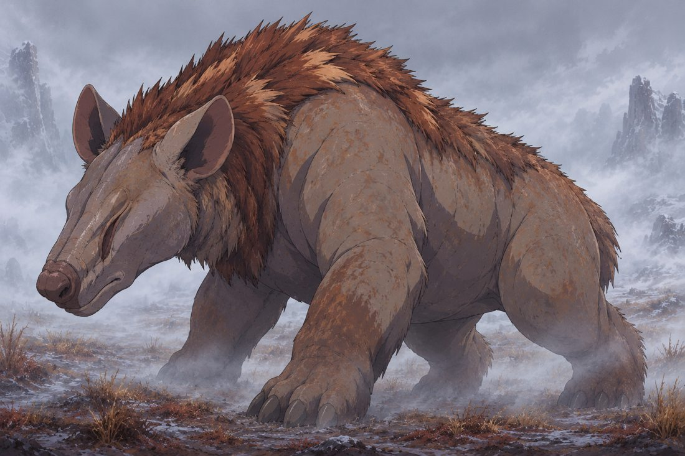
Le Pianure della Ruggine sono avvolte da una nebbia quasi perenne. Vi abita il Rugnace, un grande quadrupede solitario e territoriale, massiccio come un orso ma capace di muoversi con sorprendente leggerezza.
Il suo muso ricorda quello di una iena. Ha grandi orecchie, un naso sviluppatissimo e una particolarità che difficilmente si dimentica: non possiede occhi, neppure cavità in cui potrebbero trovarsi. La pelle è spessa, grigia e color ruggine; i pochi peli crescono sul collo e lungo la schiena.
Il Rugnace si nutre soprattutto di carcasse, ma può essere aggressivo anche verso gli animali vivi. Talvolta si solleva sulle zampe posteriori per fiutare meglio l'aria. Questo comportamento potrebbe facilmente essere scambiato per una minaccia, e ammetto che non desidererei trovarmi abbastanza vicino per chiarire la differenza.
Nota per il giocatore — Il Rugnace è un animale originale di Ellan, privo completamente di occhi. Compensa con olfatto e udito sviluppati; non è un essere soprannaturale.
I REAMI DEL SUD — TERRE DIVERSE
Nel sud di Ellan ho incontrato paesaggi molto differenti: vallate coltivate, colline, montagne e luoghi in cui il calore del sottosuolo si fa sentire anche in superficie.
Nei boschi e nelle campagne vivono cervi, cinghiali, volpi, lepri e molti uccelli. Più in alto, capre selvatiche e rapaci condividono la montagna. Non tutta la natura di Ellan è insolita, ma ogni ambiente ha le sue particolarità e custodisce creature che vale la pena conoscere.
Nota per il giocatore — Per la fauna comune dei Reami del Sud si possono prendere a riferimento gli ambienti europei temperati e montani, con variazioni locali legate al clima.
I ROC DI SILVERDOWN
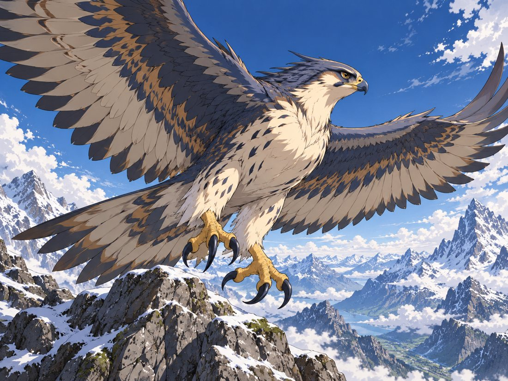
Chi percorre le vallate di Silverdown farebbe bene, di tanto in tanto, ad alzare gli occhi verso il cielo.
Fra le alte montagne del regno vivono i roc, grandi uccelli la cui apertura alare permette loro di percorrere distanze straordinarie. Vederne uno volteggiare sopra una valle è uno spettacolo che difficilmente si dimentica.
I roc formano coppie che restano unite per tutta la vita. A differenza di molti grandi rapaci solitari, preferiscono costruire i propri nidi in prossimità di quelli di altre coppie, formando vere e proprie colonie sulle pareti montuose.
La loro alimentazione è prevalentemente carnivora, sebbene consumino anche pesci e, occasionalmente, vegetali. Fra le prede che sembrano prediligere vi sono le grandi lucertole di Hotland, per raggiungere le quali possono affrontare viaggi molto lunghi.
A Silverdown il rapporto fra uomini e roc è particolarmente stretto. Alcuni di questi magnifici animali vengono addestrati come cavalcature, dando vita a una delle tradizioni più celebri del regno: la cavalleria dei roc.
Non bisognerebbe tuttavia dimenticare che, prima di essere cavalcature, sono animali selvatici, dotati di abitudini e necessità proprie.
Nota per il giocatore — I roc di Ellan sono giganteschi uccelli rapaci naturali, non magici. Per immaginarli si può pensare a enormi aquile o altri grandi rapaci, con proporzioni tali da consentire il trasporto di un cavaliere.
LE LUCERTOLE GIGANTI DI HOTLAND
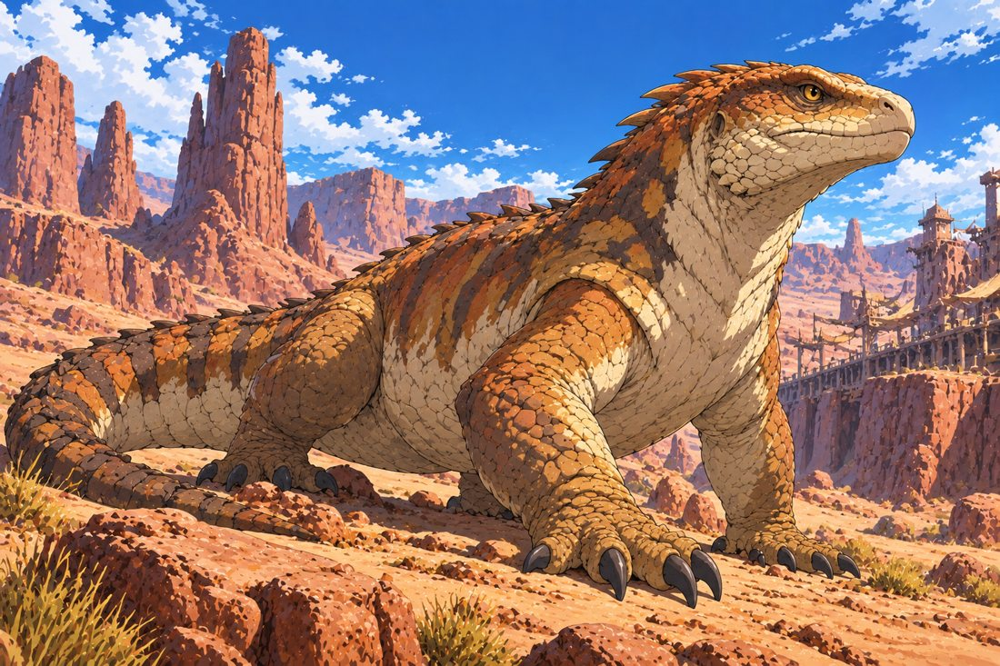
Le grandi lucertole di Hotland sono animali dall'indole difficile, che richiedono una certa esperienza per essere allevati. A osservarle mentre si spostano lentamente sotto il sole, si potrebbe pensare che siano creature pigre e poco inclini al movimento. Ma guai a spaventarle! Quando vengono prese dal panico, queste enormi lucertole possono lanciarsi in corse di sorprendente velocità, rendendo assai poco invidiabile il compito degli allevatori che devono recuperarle. La loro capacità di rigenerare la coda le rende particolarmente preziose per l'alimentazione locale. Vivono anche allo stato selvatico e sono tra le prede favorite dei roc di Silverdown.
Nota per il giocatore — Immaginate grandi lucertole terrestri simili a varani giganteschi, ma capaci di rigenerare la coda.
IL COLLINESE — SIBILLA E BUD
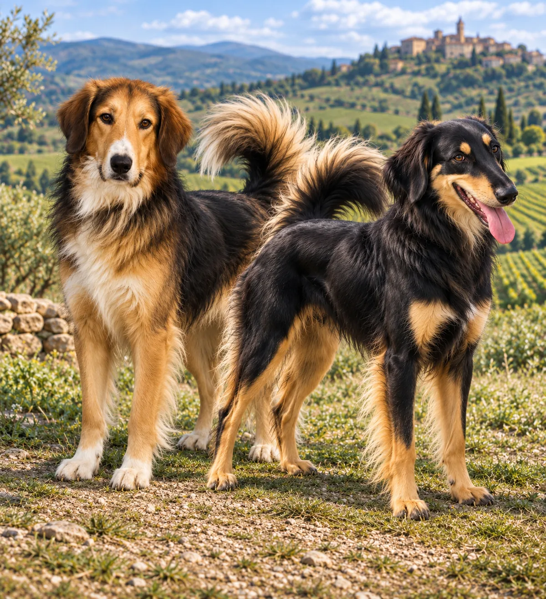
Fra gli animali domestici che ho incontrato durante i miei viaggi, pochi mi hanno lasciato ricordi tanto piacevoli quanto i cani collinesi di Yatandra.
Sono cani di taglia medio-grande, dall'aspetto robusto ma armonioso. Il loro mantello, morbido e piuttosto lungo, presenta spesso sfumature nere e fulve, oppure nere e beige. Le zampe sono ornate da caratteristiche frange di pelo, mentre le grandi orecchie pendenti e la coda folta, portata alta e arrotolata, conferiscono loro un aspetto immediatamente riconoscibile.
I maschi pesano generalmente fra i 30 e i 35 chilogrammi e sono più robusti; le femmine, più slanciate, fra i 25 e i 30. Gli abitanti delle colline li apprezzano per la loro indole mite e la loro versatilità. Tradizionalmente i maschi accompagnano i pastori nella custodia e nella conduzione delle greggi, mentre le femmine vengono impiegate nella caccia e nella ricerca dei tartufi.
Ma non vorrei che queste righe facessero pensare ai collinesi soltanto come animali da lavoro.
Durante il mio soggiorno a Yatandra ebbi infatti la fortuna di conoscere Sibilla e Bud, due splendidi esemplari di questa razza. Bud era un cane dalla corporatura solida, con un bel mantello nero e fulvo. Sibilla, più slanciata, aveva il pelo scuro impreziosito da sfumature beige.
Ricordo ancora quanto mi divertisse guardarli giocare insieme. Sibilla era un turbine di entusiasmo: correva intorno a Bud, lo invitava continuamente al gioco e sembrava non conoscere la stanchezza. Bud cercava di riportarla alla calma, con tutta la pazienza di cui era capace e con risultati, devo dire, assai modesti.
La parte più impegnativa, per me, cominciava quando Sibilla decideva di interrompere il gioco per venire a salutarmi. Essendo io piuttosto basso, raggiungermi il viso per riempirmi di leccate non le costava molta fatica. Provai più volte a spiegarle che apprezzavo il suo affetto anche senza essere lavato da capo a piedi. Non sono certo che mi abbia mai creduto.
Bud, intanto, interveniva cercando ancora una volta di tranquillizzarla, ma Sibilla riusciva quasi sempre a coinvolgere anche lui in un nuovo gioco. Confesso che, dopo qualche tempo, smisi di sperare in un saluto composto e imparai semplicemente a ridere.
La loro compagnia mi permise di comprendere meglio ciò che gli abitanti di Yatandra apprezzano tanto nei collinesi: non soltanto la capacità di rendersi utili, ma anche la naturalezza con cui entrano a far parte della vita familiare.
Ho incontrato animali ben più grandi, rari e spettacolari nel corso dei miei viaggi. Eppure, quando ripenso a Yatandra, fra le prime immagini che mi tornano alla mente vi sono proprio Sibilla e Bud.
Forse è questo uno dei privilegi del mestiere di naturalista: imparare che non occorre incontrare una creatura leggendaria per portarsi a casa un ricordo indimenticabile.
Nota per il giocatore — Il Collinese è una razza canina autoctona di Yatandra. Il suo mantello richiama quello del pastore tedesco, mentre alcuni tratti e la morbidezza del pelo ricordano il golden retriever. Le illustrazioni presenti nel Gazzettino geografico di Yatandra costituiscono il riferimento visivo della razza.
I GRIFONI DI YATANDRA
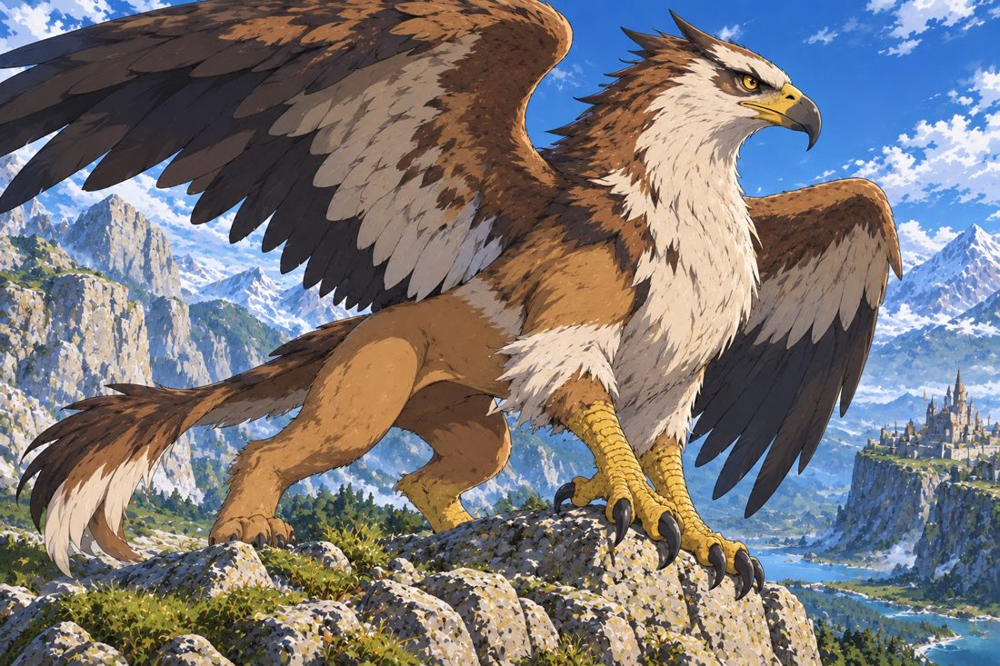
Sulle alture dei Grandi Montimargine, soprattutto dove queste montagne dominano le terre di Yatandra, vivono i grifoni.
Sono creature magnifiche, nelle quali la forza dei grandi felini sembra unirsi all'eleganza degli uccelli rapaci. Eppure, per quanto il loro aspetto possa apparire straordinario, non vi è nulla di soprannaturale nella loro esistenza.
A differenza dei roc, che formano coppie durature, i grifoni vivono in gruppi familiari la cui organizzazione ricorda quella dei leoni. Un maschio dominante condivide il territorio con diverse femmine e i loro piccoli.
I grifoni predano soprattutto animali terrestri, che individuano dall'alto prima di piombare su di loro. Occasionalmente catturano anche pesci.
Benché siano prevalentemente selvatici, alcuni grifoni vengono allevati a Freenest, dove esiste una tradizione di addestramento di questi animali come cavalcature.
Non si tratta tuttavia di esemplari comuni. Attraverso generazioni di selezione, gli allevatori hanno ottenuto grifoni di dimensioni inferiori rispetto ai loro parenti selvatici. Soltanto le femmine vengono impiegate come cavalcature, poiché i maschi sono quasi impossibili da cavalcare.
È affascinante osservare come la pazienza e l'esperienza degli allevatori abbiano permesso di stabilire un rapporto tanto particolare con animali che, sulle montagne, conservano tutta la fierezza dei grandi predatori.
Nota per il giocatore — I grifoni di Ellan hanno il classico aspetto della mitologia europea: corpo e zampe posteriori leonini, testa, ali e parte anteriore da aquila. Sono animali naturali, non magici; la loro organizzazione sociale ricorda quella dei leoni africani.
IL MAGMODONTE
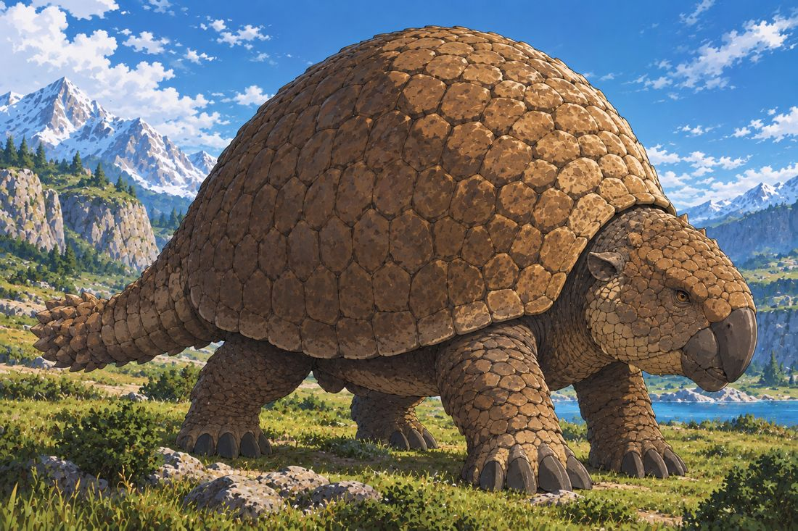
Nelle regioni geotermiche di Nuovaconcezione vive una creatura che, a mio avviso, meriterebbe un posto d'onore in qualsiasi trattato di storia naturale: il Magmodonte.
È un animale di grandi dimensioni, dal corpo basso e massiccio, protetto da una robusta corazza. Nonostante l'aspetto imponente, è prevalentemente pacifico e trascorre buona parte del tempo nutrendosi di vegetazione e cercando le sostanze minerali necessarie al proprio organismo.
Non bisogna tuttavia confondere la sua indole tranquilla con l'incapacità di difendersi. Un Magmodonte spaventato o provocato può diventare estremamente pericoloso.
Ma è nella riproduzione che questa creatura rivela la sua caratteristica più sorprendente.
Le femmine depongono le uova direttamente nel magma fuso, dove rimangono fino alla schiusa. Eppure, una volta nati, i piccoli vengono nutriti con il latte materno.
Sì, avete letto correttamente: il Magmodonte è un mammifero che depone uova, e il calore del suo corpo dipende dall'ambiente circostante.
Non conosco altri animali in cui queste caratteristiche si manifestino in modo tanto straordinario. E ancora una volta mi trovo a constatare quanto la natura di Ellan sia più varia di quanto le nostre classificazioni riescano a descrivere.
I Magmodonti vivono allo stato selvatico. Per quanto possano sembrare adatti a diventare robuste bestie da lavoro, non vengono allevati dagli abitanti della regione.
Nota per il giocatore — Immaginate un gigantesco gliptodonte, un mammifero preistorico corazzato realmente esistito sulla Terra. Il Magmodonte presenta però una biologia fantastica propria di Ellan: è un mammifero a sangue freddo, depone le uova nel magma e allatta i piccoli dopo la schiusa.
I NERASKAI
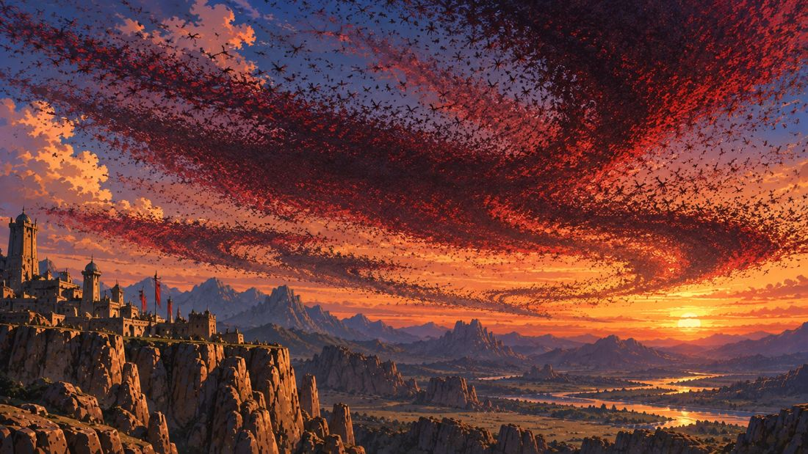
Vi sono animali la cui pericolosità dipende dalle dimensioni, dalla forza o dalle armi che la natura ha loro concesso. I Neraskai non appartengono a nessuna di queste categorie.
Sono piccoli insetti delle pianure più remote di Nuovaconcezione, più minuti delle comuni locuste. A riposo si presentano come piccole cavallette nere, poco appariscenti. Solo quando saltano o prendono il volo mostrano le ali rosse, che per un istante accendono lo sciame di bagliori inquietanti. Possono spostarsi saltando oppure volando e, per gran parte della loro esistenza, vivono dispersi nel territorio.
In queste condizioni, incontrarne uno non rappresenta motivo di particolare preoccupazione. Ma ogni diversi anni, quando il clima offre le condizioni adatte, avviene qualcosa di straordinario e terribile.
I Neraskai si radunano in sciami immensi per riprodursi. In questo periodo necessitano di una quantità enorme di nutrimento, indispensabile per la successiva deposizione delle uova.
Lo sciame diventa allora una massa divoratrice capace di sopraffare animali immensamente più grandi dei singoli insetti. Il pericolo non deriva dalla forza di uno, ma dal numero incalcolabile degli individui e dalla loro insaziabile fame.
Per fortuna questi eventi sono rari, e possono trascorrere anni senza che se ne verifichi uno.
Ho raccolto un detto popolare che mi sembra descrivere meglio di qualsiasi trattato la reputazione di questi animali:
«Un Roc puoi abbatterlo. Un Magmodonte, con fatica, puoi sconfiggerlo. I Neraskai? Corri. Soltanto corri.»
Raramente i consigli della saggezza popolare sono tanto chiari. In questo caso, non posso che condividerli.
Nota per il giocatore — I Neraskai sono insetti originali di Ellan. Immaginateli come piccole cavallette nere con ali rosse, visibili soprattutto quando saltano o volano. Il riferimento generale è uno sciame di locuste, ma durante il periodo riproduttivo il comportamento è molto più aggressivo e pericoloso.
LA FORESTA NERA — UN MONDO PREISTORICO
Fra tutte le regioni di Ellan che ho avuto occasione di studiare, poche esercitano su di me un fascino pari alla Foresta Nera.
Il suo nome può trarre in inganno. Non si tratta di un'unica distesa di alberi fitti e impenetrabili, bensì di un territorio immenso, nel quale si alternano foreste umide, boschi più freschi, paludi, corsi d'acqua, radure e ampie vallate.
Ma è soprattutto la fauna a rendere questa regione straordinaria.
Qui vivono animali che non si incontrano in nessun'altra parte conosciuta del continente. Alcuni sono piccoli e sfuggenti; altri raggiungono dimensioni che farebbero impallidire persino i più grandi erbivori delle pianure settentrionali.
Immensi animali dal collo lunghissimo si nutrono delle fronde più alte, mentre altri, corazzati o muniti di corna, percorrono le radure. Fra la vegetazione si muovono anche temibili predatori, alcuni giganteschi, altri sorprendentemente piccoli e rapidi.
Non mancano creature alate, grandi insetti e una straordinaria varietà di animali acquatici.
Questa regione è la patria degli Weishtar, che hanno imparato a convivere con una fauna tanto imponente. Per gli stranieri, invece, rimane una terra in gran parte sconosciuta, nella quale ogni viaggio richiede prudenza.
Non è tuttavia una terra dominata dai mostri. È un ecosistema complesso, dove ogni specie occupa il proprio posto, come avviene nei boschi e nelle campagne che conosciamo meglio.
Nota per il giocatore — La Foresta Nera ospita fauna preistorica realmente esistita sulla Terra, anche di periodi geologici differenti. Vi convivono, per esempio, dinosauri del Giurassico e del Cretaceo. Il loro aspetto segue le ricostruzioni paleontologiche moderne, compresa la presenza di piume nelle specie per cui sono documentate.
I GRANDI ERBIVORI
Ricordo ancora la prima volta che vidi una mandria di quei giganteschi erbivori dal collo smisurato attraversare una vallata della Foresta Nera.
Avevo già osservato i mammut delle terre settentrionali, eppure nulla mi aveva preparato a incontrare animali tanto immensi. Alcuni riuscivano a raggiungere con naturalezza le fronde degli alberi più alti, mentre altri si nutrivano della vegetazione più vicina al terreno.
Non tutti i grandi erbivori della foresta, tuttavia, possiedono un collo tanto lungo. Ve ne sono alcuni con grandi placche lungo il dorso e code munite di robuste spine, altri ancora dotati di imponenti corna e di uno scudo osseo che protegge il collo.
La loro mole potrebbe farli sembrare creature lente e indifese. Sarebbe un grave errore: un animale che pesa quanto numerosi carri può rappresentare un pericolo anche senza alcuna intenzione aggressiva.
Gli Weishtar conoscono bene questi giganti e sanno distinguere le specie che possono essere avvicinate con prudenza da quelle alle quali è meglio lasciare molto spazio.
Ho trascorso molte ore a osservarli, e continuo a trovare sorprendente che animali tanto diversi possano condividere lo stesso territorio, ciascuno adattato a un proprio modo di nutrirsi e sopravvivere.
Gli Weishtar cacciano abitualmente erbivori di dimensioni più gestibili per il proprio sostentamento. La caccia ai giganti, invece, è rara e richiede battute collettive appositamente organizzate.
Nota per il giocatore — I grandi erbivori descritti comprendono sauropodi, come Diplodocus e Brachiosaurus, stegosauri e triceratopi. Sono dinosauri realmente esistiti sul nostro pianeta, anche se appartenuti a epoche differenti. Su Ellan convivono nella Foresta Nera, distribuiti secondo le loro esigenze ecologiche.
I GRANDI CARNIVORI
Non tutti gli abitanti della Foresta Nera si accontentano di brucare foglie o strappare fronde dagli alberi.
Vi vivono predatori di ogni dimensione, alcuni tanto grandi da incutere timore persino agli animali più imponenti.
Ricordo il profondo silenzio che calò quando, ai margini di una radura, scorgemmo un enorme carnivoro dalla testa massiccia e dalle poderose mascelle. Ero l'unico forestiero: mi trovavo con gli Weishtar che mi accompagnavano attraverso la foresta, e furono loro a farmi immediatamente cenno di arretrare.
Accanto a questi giganti esistono cacciatori più piccoli, agili e talvolta ricoperti di piume. Non tutti inseguono le medesime prede, né adottano le stesse strategie.
Gli Weishtar conoscono bene i pericoli rappresentati da questi animali. Contrariamente a quanto molti stranieri potrebbero immaginare, non cercano di sterminarli.
Quando un grande predatore si avvicina troppo a un villaggio, può essere più saggio abbandonare temporaneamente la zona che affrontarlo.
Ho imparato da loro una lezione importante: conoscere la natura non significa necessariamente dominarla.
Nota per il giocatore — Tra i carnivori della Foresta Nera troviamo dinosauri realmente esistiti, come Tyrannosaurus rex e Allosaurus, insieme a teropodi più piccoli, alcuni piumati. Il loro aspetto segue le ricostruzioni paleontologiche moderne. Non devono necessariamente comportarsi come i mostri cinematografici.
I FORORACHI
Durante il mio soggiorno presso gli Weishtar ebbi modo di conoscere da vicino alcuni degli animali più singolari della Foresta Nera: i fororachi.
Sono grandi uccelli terrestri, incapaci di volare, dotati di zampe robuste e di un becco potente. Nonostante la loro natura di predatori, gli Weishtar hanno imparato ad allevarli e a stabilire con loro legami di autentico affetto.
Devo confessare che il nostro primo incontro mi lasciò piuttosto impressionato.
Non sono mai stato particolarmente alto, nemmeno rispetto agli abitanti dei Reami, ma trovarmi davanti a un uccello il cui becco incombeva ben al di sopra della mia testa fu un'esperienza difficile da dimenticare.
Uno di questi animali, che apparteneva alla famiglia presso cui soggiornavo, prese ben presto l'abitudine di seguirmi. Inizialmente trovavo poco rassicurante avere alle spalle un predatore tanto grande, soprattutto quando abbassava la testa per osservarmi più da vicino.
Col tempo compresi che non vi era alcuna minaccia nei suoi gesti. Mi aveva semplicemente riconosciuto come una presenza familiare.
Gli Weishtar utilizzano i fororachi nella caccia, nella difesa dei villaggi e in diverse attività quotidiane. Ma considerarli soltanto animali da lavoro sarebbe ingiusto: spesso sono veri membri della famiglia, fedeli e affettuosi quanto i cani allevati in altri regni.
Non vengono cavalcati. Per quanto grandi e robusti, il loro rapporto con gli Weishtar è quello di compagni, non di cavalcature.
Ripensandoci, credo che quel fororaco mi considerasse una creatura piuttosto curiosa. E, date le nostre rispettive altezze, forse anche un cucciolo particolarmente insolito.
Nota per il giocatore — I fororachi sono ispirati ai Phorusrhacidae, i cosiddetti «uccelli del terrore», grandi uccelli predatori preistorici incapaci di volare realmente esistiti sulla Terra. A Ellan gli Weishtar li allevano come animali da compagnia, caccia, guardia e difesa.
IL MARE NASCOSTO
Se qualcuno mi avesse raccontato che nel cuore della Foresta Nera si trova un mare, probabilmente avrei pensato a un'esagerazione.
Eppure è proprio così.
Dopo aver attraversato distese di vegetazione, fiumi e vallate, mi trovai davanti a un'immensa superficie d'acqua salata, interamente circondata dalla terraferma.
Non si tratta di un semplice lago. Le sue acque ospitano una fauna marina straordinaria, composta da pesci di ogni dimensione e da grandi rettili acquatici.
Alcuni di questi ultimi raggiungono dimensioni impressionanti. Osservarli emergere brevemente alla superficie, prima di scomparire nuovamente nelle profondità, è un'esperienza difficile da dimenticare.
Gli Weishtar conoscono bene le coste di questo mare. Vi pescano dalla riva e non esitano a entrare in acqua nei luoghi che ritengono sicuri. Non utilizzano imbarcazioni e non si avventurano al largo. Dopo aver osservato alcune delle creature che popolano queste acque, devo ammettere di comprendere perfettamente la loro prudenza.
Il mare della Foresta Nera è un mondo nel mondo, con una propria rete di predatori e prede, nascosto agli occhi di gran parte degli abitanti di Ellan.
Nota per il giocatore — Il mare interno della Foresta Nera ospita fauna marina preistorica realmente esistita sulla Terra, inclusi grandi rettili marini come i mosasauri. Questi animali sono rettili acquatici, non dinosauri. Le specie presenti appartengono anche a epoche geologiche differenti.
LE CREATURE DEL CIELO
Chi visita la Foresta Nera commetterebbe un grave errore limitandosi a osservare il terreno. Anche il cielo ospita creature straordinarie.
Al di sopra delle chiome si possono scorgere grandi rettili alati, che sfruttano le correnti d'aria per percorrere lunghe distanze. Alcuni possiedono un'apertura alare impressionante; altri, più piccoli, attraversano rapidamente gli spazi fra gli alberi.
Non si tratta di uccelli. Le loro ali sono formate da membrane sostenute da dita enormemente allungate, una struttura assai diversa da quella delle ali piumate che conosciamo.
Ma non sono soltanto i grandi animali volanti a meritare attenzione.
Presso le zone umide ho osservato insetti dalle dimensioni sorprendenti, simili a gigantesche libellule. Vederne uno posarsi su un ramo vicino a me fu un'esperienza piuttosto singolare: per qualche istante ebbi la sensazione che fosse un piccolo uccello ad aver scelto quel posatoio.
Gli Weishtar sembravano molto meno stupiti di me. D'altra parte, ho notato che nella Foresta Nera sono spesso io a meravigliarmi di ciò che loro considerano perfettamente normale.
È una delle ragioni per cui viaggiare continua a piacermi tanto.
Questi grandi insetti, pur essendo predatori di altri insetti e di piccoli animali, non costituiscono normalmente un pericolo per gli Weishtar né per gli altri popoli di Ellan.
Nota per il giocatore — I rettili volanti sono pterosauri, animali preistorici realmente esistiti e distinti dai dinosauri. Gli insetti giganti comprendono forme come Meganeura, un antico insetto simile a una gigantesca libellula. Su Ellan convivono pur provenendo da epoche differenti; le Meganeura non sono mostri aggressivi verso le persone.
FENICE — LE GRANDI MANDRIE
Se la Foresta Nera mi ha insegnato quanto possano essere sorprendenti le forme della vita, le grandi pianure di Fenice mi hanno mostrato quanto possa essere impressionante il suo numero.
Ricordo una mattina in cui, da una piccola altura, osservai il passaggio di una mandria tanto vasta da non riuscire a distinguerne la fine.
Gnu, antilopi e gazzelle avanzavano attraverso l'erba, seguiti da altre mandrie che sembravano non esaurirsi mai. Il terreno vibrava sotto migliaia di zoccoli e la polvere sollevata oscurava parte dell'orizzonte.
Questi grandi spostamenti seguono la disponibilità di acqua e pascoli. Dove le piogge favoriscono la crescita dell'erba, gli erbivori trovano nutrimento; quando le condizioni cambiano, le mandrie riprendono il cammino.
Le pianure ospitano anche poderosi bufali, elefanti e rinoceronti, mentre lungo i fiumi vivono ippopotami e coccodrilli.
Naturalmente una tale abbondanza di erbivori sostiene numerosi predatori. Leoni, leopardi, ghepardi e iene seguono le opportunità offerte dalle grandi mandrie, ciascuno secondo le proprie abitudini.
Ma a Fenice anche gli abitanti hanno imparato a vivere seguendo il ritmo di questi animali.
Quando arrivano le grandi migrazioni, le tribù possono sospendere le loro rivalità e ritrovarsi per cacciare insieme. In un periodo di tanta abbondanza, contendersi le prede sarebbe davvero sciocco.
Da queste antiche riunioni deriva una tradizione di festa e condivisione che ancora oggi accompagna l'arrivo delle mandrie.
Ho sempre trovato confortante che, almeno qualche volta, sia proprio l'abbondanza della natura a ricordare ai popoli di Ellan il piacere di stare insieme.
Nota per il giocatore — La fauna di Fenice richiama quella delle savane africane, con grandi migrazioni stagionali, erbivori di ogni dimensione e predatori che occupano differenti nicchie ecologiche.
LUNARE — UNICORNI E PEGASI
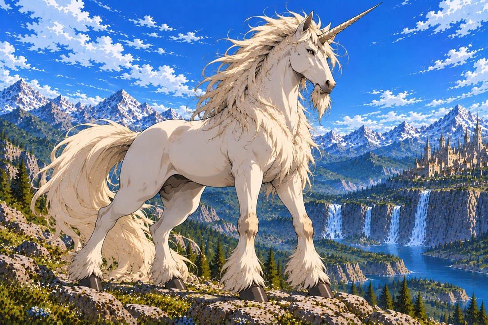
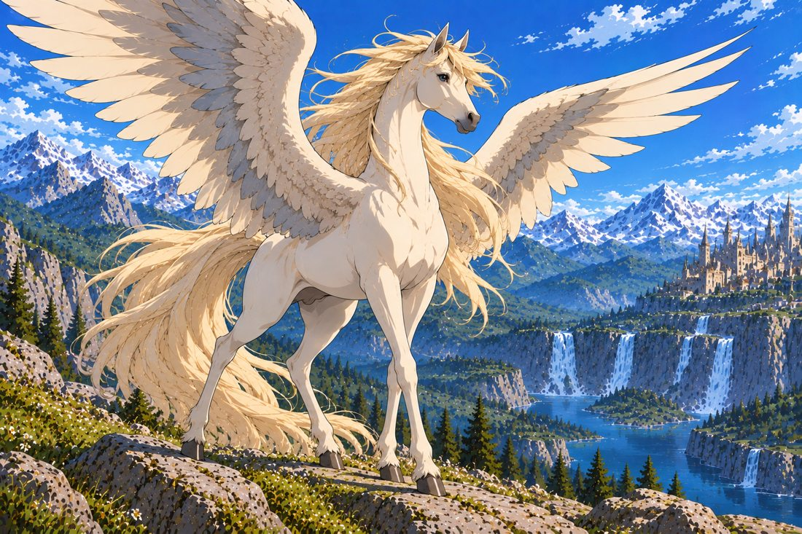
Nelle campagne e nelle colline di Lunare si possono incontrare animali che, più di molti altri, hanno alimentato racconti e leggende.
Parlo naturalmente degli unicorni e dei pegasi.
Molti viaggiatori li considerano creature differenti. È un errore comprensibile, poiché il loro aspetto sembra suggerire proprio questa conclusione. Eppure si tratta dei maschi e delle femmine di una medesima specie.
I maschi, chiamati unicorni, sono equini slanciati, dotati di un unico corno sulla fronte e di caratteristici ciuffi di pelo presso gli zoccoli e sotto il mento. Sono generalmente solitari, territoriali e assai poco tolleranti verso chiunque si avvicini troppo.
Le femmine, conosciute come pegasi, possiedono invece grandi ali piumate. Vivono in branchi e trascorrono parte del loro tempo in volo, spostandosi fra i pascoli e le alture.
I piccoli mostrano fin dalla nascita le caratteristiche del proprio sesso. Le giovani femmine imparano a volare quasi immediatamente, mentre i maschi nascono già con un piccolo abbozzo del futuro corno.
Questi ultimi devono imparare a cavarsela da soli fin dai primi momenti di vita, una caratteristica che può sembrare crudele, ma che fa parte della loro natura.
Entrambi si nutrono di vegetali e, contrariamente a molte credenze popolari, non possiedono alcun potere magico.
Non sono animali comuni come i cavalli delle campagne, ma neppure rarità leggendarie. Chi conosce i luoghi adatti può osservarli senza dover dedicare un'intera vita alla loro ricerca.
Consiglio tuttavia di mantenere una rispettosa distanza dagli unicorni. Un corno tanto appuntito, unito a un carattere tanto poco accomodante, rappresenta un argomento che preferisco non discutere da vicino.
Nota per il giocatore — In Ellan, unicorni e pegasi sono rispettivamente maschi e femmine della stessa specie animale. I maschi hanno un corno ma non le ali, mentre le femmine hanno le ali ma non il corno. Sono erbivori naturali, privi di poteri magici.
LUNARE — LA MANTICORA
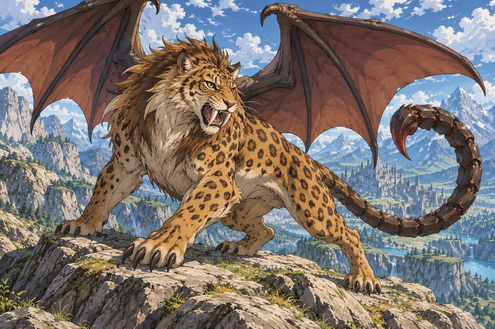
Non tutte le creature alate di Lunare possiedono la grazia dei pegasi. Alcune hanno sviluppato le ali per uno scopo assai meno rassicurante: cacciare.
Fra queste, la manticora è certamente una delle più temute.
Il suo corpo ricorda quello di un grande leopardo, agile e muscoloso, ma dalla schiena si sviluppano ampie ali membranose, simili a quelle dei pipistrelli. La coda termina invece con un pungiglione capace di inoculare una sostanza paralizzante.
Non ho mai trovato alcuna prova delle strane storie che le attribuiscono un volto umano. La sua testa è quella di un felino, e i suoi comportamenti sono quelli di un animale predatore.
Le manticore conducono un'esistenza prevalentemente solitaria e sono assai meno numerose degli unicorni e dei pegasi.
Fra le loro prede vi sono proprio questi ultimi. In particolare, sembrano preferire le femmine alate, che davanti a un'aggressione tendono a fuggire. I maschi, al contrario, possono reagire con una determinazione che rende la caccia molto più rischiosa.
La manticora non possiede poteri magici. Il suo volo, gli artigli, i denti e soprattutto il veleno paralizzante sono già strumenti più che sufficienti per farne un predatore formidabile.
Personalmente, considero una fortuna non aver mai dovuto verificare da vicino l'efficacia del suo pungiglione.
Nota per il giocatore — La manticora di Ellan ha testa e corpo di leopardo, ali da pipistrello e coda con pungiglione paralizzante. Non ha volto umano né natura soprannaturale ed è un predatore solitario.
STARLIGHT — I KIRIN
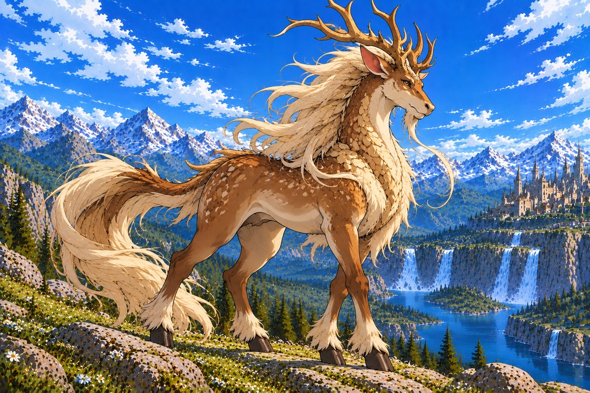
Vi sono luoghi nei quali la natura e le leggende sembrano così strettamente intrecciate che risulta difficile distinguere dove termini l'una e comincino le altre.
Starlight è certamente uno di questi luoghi.
Fra i suoi boschi e le vallate montane vivono i kirin, animali dall'aspetto tanto singolare da essere spesso considerati creature spirituali.
A osservarli con attenzione, tuttavia, si scopre che appartengono alla grande famiglia dei cervidi, sebbene la loro pelle sia ricoperta da piccole scaglie e il loro capo porti splendidi palchi ramificati.
Si nutrono di vegetazione e vivono insieme ai cervi comuni, con i quali condividono pascoli e rifugi.
Una loro particolarità è la formazione di coppie stabili. Generalmente una coppia di kirin accompagna un branco di cervi, contribuendo alla sua difesa.
Soprattutto i maschi, grazie alle loro dimensioni e ai robusti palchi, possono scoraggiare alcuni predatori che altrimenti rappresenterebbero una seria minaccia.
Gli abitanti di Starlight attribuiscono ai kirin molti significati simbolici, ma non ho osservato in loro alcun potere soprannaturale.
Questo, naturalmente, non toglie nulla alla loro bellezza. Semmai mi pare che renda ancora più straordinario il fatto che esistano davvero.
Nota per il giocatore — I kirin di Ellan richiamano il qilin della tradizione dell'Asia orientale, ma sono animali naturali: cervidi erbivori ricoperti di scaglie, con palchi ramificati. Vivono in coppie stabili, associate ai branchi di cervi comuni.
STARLIGHT — I KAPPA
Fra tutte le creature che abitano i fiumi e gli specchi d'acqua di Starlight, poche sono circondate da tante superstizioni quanto i kappa.
Le leggende locali li descrivono spesso come esseri dotati di volontà e intenzioni assai simili alle nostre. La realtà, come ho potuto constatare, è molto diversa, ma non necessariamente più rassicurante.
Il kappa è un grande rettile corazzato, il cui aspetto ricorda quello di un'enorme tartaruga dal potente becco.
A differenza delle comuni tartarughe, possiede quattro zampe lunghe e diritte, che gli consentono di sostenere il pesante corpo ben sollevato dal terreno.
Sebbene trascorra molto tempo in acqua, è perfettamente capace di muoversi sulla terraferma.
Gli esemplari adulti presentano comunemente un guscio lungo circa due metri, ma alcuni individui particolarmente anziani possono raggiungere i tre metri.
I kappa sono carnivori e si nutrono soprattutto di pesci. Vivono generalmente soli e difendono con decisione il proprio territorio.
Non sono animali che aggrediscono ogni essere vivente incontrato: quando sono sazi, possono ignorare completamente la presenza di un viaggiatore. Ma un kappa affamato è tutt'altra questione e può considerare una persona una possibile preda.
Ho imparato che è preferibile osservare questi animali da una distanza rispettosa. Dopotutto, non è sempre facile capire se una tartaruga abbia già pranzato.
Nota per il giocatore — I kappa di Ellan sono rettili naturali, non spiriti acquatici. Immaginate una gigantesca tartaruga azzannatrice, simile alla tartaruga alligatore, ma con quattro zampe lunghe, robuste e diritte che tengono il corpo sollevato. Sono predatori territoriali, principalmente piscivori, capaci di vivere sia in acqua sia sulla terraferma.
STARLIGHT — LE KITSUNE
Fra gli animali di Starlight, pochi hanno alimentato tante storie quanto le kitsune.
Gli abitanti raccontano di volpi capaci di assumere sembianze umane, ingannare i viaggiatori e vivere per secoli. Personalmente, non ho mai trovato prove di simili capacità. Ho però scoperto qualcosa che rende queste creature altrettanto interessanti.
Le kitsune sono volpi dall'aspetto piuttosto comune, almeno finché non si osserva la loro coda. O, per essere precisi, le loro code.
Quando sono giovani, possiedono una sola coda, ma con il passare degli anni ne sviluppano altre. Gli esemplari più anziani possono arrivare ad averne nove.
Non si tratta di animali immortali: la loro vita può raggiungere all'incirca i cinquant'anni, una longevità davvero notevole per una volpe.
Le kitsune vivono prevalentemente sole e si nutrono come le comuni volpi, cacciando piccoli animali e integrando la dieta con frutti e altri alimenti vegetali.
Incontrarne una con molte code è dunque un evento piuttosto speciale, non per qualche potere misterioso, ma perché significa trovarsi davanti a un animale che ha saputo sopravvivere per moltissimi anni.
Gli abitanti di Starlight attribuiscono grande significato al numero delle loro code. Non mi sembra una tradizione così strana: anche io trovo che una creatura tanto anziana meriti una certa considerazione.
E, se devo essere sincero, una volpe con nove code è comunque uno spettacolo che difficilmente si dimentica.
Nota per il giocatore — Le kitsune di Ellan richiamano le volpi soprannaturali del folklore giapponese, ma sono animali naturali, senza capacità di trasformazione o poteri magici. Il numero delle code aumenta con l'età, fino a un massimo di nove; possono vivere circa cinquant'anni.
STARLIGHT — GLI HŌ-Ō
Se dovessi scegliere un solo animale di Starlight per dimostrare che la natura non ha bisogno della magia per creare meraviglie, probabilmente sceglierei l'hō-ō.
È un uccello dalle dimensioni paragonabili a quelle di un pavone, ma il suo piumaggio è assai più elaborato.
Lunghe penne ornamentali, colori vivacissimi e una coda spettacolare gli conferiscono un aspetto che sembra uscito dai dipinti più fantasiosi degli artisti locali.
La prima volta che ne osservai uno rimasi immobile per diversi istanti. Devo ammettere che, per una volta, persino la mia abituale curiosità ebbe la meglio sulla voglia di prendere appunti: non desideravo perdermi nemmeno un particolare di quello spettacolo.
Gli abitanti di Starlight hanno circondato questo animale di storie e significati simbolici, spesso attribuendogli caratteristiche soprannaturali.
Eppure l'hō-ō è un uccello in carne, ossa e piume, meraviglioso proprio perché reale.
Non conosco ancora abbastanza le sue abitudini per descriverle con la precisione che vorrei. Ma non considero questa lacuna un difetto della natura: è semplicemente un buon motivo per tornare a Starlight.
Nota per il giocatore — L'hō-ō di Ellan richiama la fenice dell'Asia orientale, ma è un animale naturale. Immaginatelo come un uccello grande quanto un pavone, con un piumaggio che combina la ricchezza ornamentale dei pavoni e degli uccelli del paradiso. Non è una creatura di fuoco e non possiede poteri magici.
STARLIGHT — I BAKU
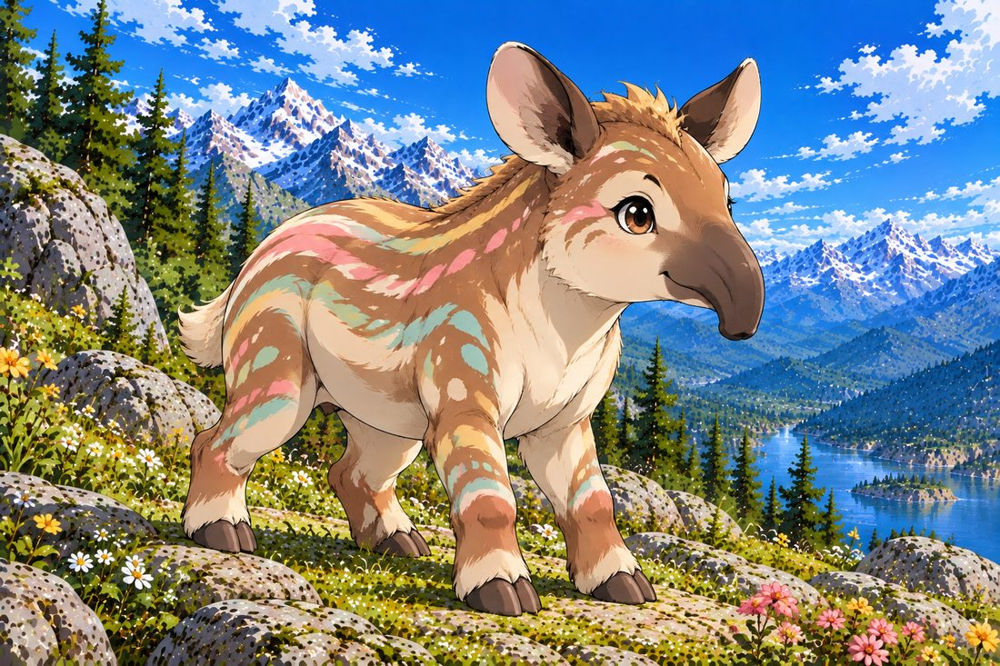
Fra gli animali di Starlight, ve ne sono alcuni che non occorre cercare nelle foreste o sulle montagne. Talvolta basta entrare in una casa.
I baku sono piccoli animali dall'aspetto curioso, simili a tapiri in miniatura, ma con colori assai più vivaci. Un adulto raggiunge all'incirca le dimensioni di un piccolo maiale domestico.
Sono creature affettuose, che amano la compagnia delle persone e cercano volentieri un posto comodo in cui riposare.
Ho avuto occasione di soggiornare presso una famiglia che ne possedeva uno. Ogni sera, quando mi sistemavo per dormire, il piccolo animale veniva a sdraiarsi accanto a me e iniziava a emettere un suono basso e regolare, sorprendentemente simile alle fusa di un gatto.
All'inizio pensai che fosse una coincidenza, ma ben presto mi accorsi che il baku cercava deliberatamente la vicinanza delle persone durante il riposo.
Gli abitanti di Starlight raccontano che questi animali divorino gli incubi e proteggano il sonno di chi li ospita.
Non saprei dire se un baku possa davvero mangiare un brutto sogno. Posso però assicurare che addormentarsi con una creatura tanto tranquilla accanto rende la notte decisamente più piacevole.
Forse, qualche volta, le leggende raccontano una verità senza bisogno di essere prese alla lettera.
Nota per il giocatore — I baku di Ellan sono piccoli mammiferi domestici, simili a tapiri colorati, grandi più o meno quanto un maialino vietnamita. Sono affettuosi, amano dormire accanto alle persone ed emettono un verso simile alle fusa. La capacità di divorare gli incubi appartiene esclusivamente al folklore locale.
STARLIGHT — GLI ONI
Gli abitanti di Starlight raccontano molte storie sugli oni, descrivendoli spesso come terribili demoni delle montagne.
Dopo averne osservato alcuni, posso affermare che la loro natura è assai meno misteriosa, anche se non necessariamente più rassicurante.
Gli oni sono grandi primati dall'aspetto simile a quello dei gorilla, dotati di una forza considerevole e di un temperamento poco accomodante. Il loro tratto più impressionante è il muso glabro e colorato, spesso rossastro o bluastro, che ricorda da vicino le maschere con cui gli abitanti di Starlight raffigurano i demoni delle montagne.
Vivono prevalentemente nelle regioni montuose, ma non è raro che qualche esemplare si avvicini ai villaggi, soprattutto quando trova qualcosa di interessante da mangiare.
Sono onnivori e sanno adattare la propria alimentazione alle risorse disponibili.
La loro organizzazione sociale è familiare. I gruppi comprendono un maschio dominante, diverse femmine e i piccoli.
Sarebbe tuttavia un errore pensare che soltanto il maschio si occupi della difesa. Quando il gruppo viene minacciato, anche le femmine possono reagire con notevole aggressività.
Ho avuto occasione di osservare una famiglia di oni da una distanza che consideravo ragionevole. Quando il grande maschio si voltò nella mia direzione, scoprii immediatamente che la sua opinione sulla distanza ragionevole era diversa dalla mia.
Mi allontanai con tutta la discrezione di cui ero capace.
Talvolta, nella ricerca naturalistica, la prudenza costituisce una qualità importante almeno quanto la curiosità.
Gli oni non sono demoni e non possiedono poteri soprannaturali. Sono semplicemente animali grandi, forti e territoriali, che meritano di essere rispettati nel loro ambiente.
Nota per il giocatore — Gli oni di Ellan sono grandi primati simili ai gorilla, non esseri demoniaci. Hanno il muso glabro e vivacemente colorato, che richiama le maschere degli oni della tradizione giapponese. Sono onnivori, territoriali e vivono in gruppi familiari nei quali anche le femmine partecipano alla difesa.
STARLIGHT — I RYŪ
Vi sono animali che più di altri dimostrano quanto il confine fra osservazione e leggenda possa diventare sottile. Il ryū è uno di questi.
Gli abitanti di Starlight parlano spesso di draghi delle acque, e comprendo bene il motivo. Pochi animali, infatti, possono colpire l'immaginazione quanto un lungo corpo serpentiforme che emerge dalle acque di un fiume o di un lago.
Il ryū è un grande rettile acquatico, dal corpo allungato, provvisto soltanto di due piccole zampe anteriori. Non possiede arti posteriori e non ha alcuna capacità di volare.
Gli adulti raggiungono comunemente i cinque o sei metri di lunghezza, mentre gli individui più vecchi possono superare gli otto.
Si nutre esclusivamente di pesci e trascorre gran parte della propria vita nelle acque interne di Starlight. Non ho trovato prove che attacchi deliberatamente esseri umani o grandi animali terrestri.
La sua sagoma e i suoi movimenti hanno senza dubbio contribuito alla nascita delle leggende sui draghi orientali. Eppure il ryū non ha nulla a che vedere con i grandi draghi dei racconti antichi: non vola, non parla e non manifesta alcuna intelligenza superiore a quella di un comune animale predatore.
Rimane tuttavia una creatura di straordinaria eleganza. Vederla scivolare nell'acqua quasi senza incresparne la superficie è uno spettacolo che giustifica da solo molte delle fantasie nate sul suo conto.
Nota per il giocatore — Il ryū di Ellan richiama il drago orientale nell'aspetto generale, ma è un grande serpente acquatico con soltanto due piccole zampe anteriori, incapace di volare e strettamente pescivoro. Non è un vero drago né una creatura magica.
IL RUGGINOFAGO
Devo confessare che la prima volta che sentii parlare di un animale capace di mangiare il ferro pensai a uno scherzo ai danni di un viaggiatore credulone. Mi ricredetti osservando una minuscola creatura intenta a consumare un vecchio chiodo nella bottega di un fabbro. Il padrone della bottega era assai meno entusiasta di me.
Il rugginofago si incontra in quasi tutte le regioni di Ellan. A prima vista sembra un piccolo artropode, con carapace segmentato, numerose zampe e antenne evidenti. Gli esemplari comuni sono grandi pressappoco quanto un cervo volante e spesso passano inosservati, almeno finché non trovano qualcosa di metallico da rosicchiare.
Il segreto del loro appetito risiede nelle antenne: con esse provocano la corrosione dei metalli e si nutrono della ruggine e del materiale così prodotto. Quasi nulla resiste a questo processo. Soltanto oro, argento, platino e oricalco restano intatti. Immagino che i gioiellieri ne siano piuttosto sollevati, anche se dubito che la stessa cosa possa dirsi dei fabbri.
I rugginofaghi presentano un'altra particolarità: continuano a crescere per tutta la vita. La crescita rallenta con gli anni, ma non si arresta completamente. Dopo decenni alcuni raggiungono le dimensioni di un cane, e non si può escludere che esistano individui eccezionalmente antichi e ancora più grandi. Più crescono, più metallo riescono a corrodere. È anche per questo che gli esemplari maggiori frequentano spesso discariche e depositi di rottami, dove il nutrimento abbonda.
A dispetto della loro fama, i rugginofaghi non sono aggressivi verso le persone o gli altri animali: non li cacciano e non hanno motivo di attaccarli. Possono però causare incidenti senza volerlo. Un sostegno metallico indebolito, un attrezzo rovinato o un'armatura corrosa nel momento meno opportuno sono pericoli che sarebbe sciocco sottovalutare.
Curiosamente, qualcuno ha imparato a servirsi di loro per smaltire ferraglia e metalli ormai inutilizzabili. Trovo che sia un ottimo esempio di quanto l'utilità di un animale dipenda spesso dal punto di vista di chi lo incontra. Per il fabbro che perde i chiodi è una disgrazia; per chi deve liberarsi di una montagna di rottami, può essere un collaboratore instancabile.
Quanto a me, continuo a considerarli creature affascinanti. Mi limito a controllare che non si avvicinino troppo alle fibbie della mia borsa.
Nota per il giocatore — Per immaginare il rugginofago si può prendere a riferimento il Rust Monster dei bestiari di Dungeons & Dragons, ma soltanto nell'aspetto generale e nella capacità di corrodere i metalli: non si applicano automaticamente le sue regole di gioco. A Ellan è generalmente piccolo come un cervo volante, cresce lentamente per tutta la vita e non è aggressivo verso gli esseri viventi. Oro, argento, platino e oricalco non vengono corrosi.
L'AUTORE — COOKY EDGEWOOD
Se siete arrivati fin qui, immagino che vi interessino davvero gli animali. Oppure avete trovato questo volume aperto e non siete riusciti a richiuderlo. Vi capisco benissimo: a me succede continuamente, e non soltanto con i libri.
Forse avrei dovuto presentarmi all'inizio. Mi chiamo Cooky Edgewood, sono un viaggiatore, un osservatore della natura e il capitano della Ventoferoce, una nave che vola. Sì, vola davvero. E no, non è necessario preoccuparsi per gli strani rumori che fa: almeno, non sempre.
Qualcuno mi chiama mezz'uomo, qualcuno mi scambia per un ragazzo. Io di solito non perdo tempo a correggerli, soprattutto quando nelle vicinanze c'è qualcosa di interessante da osservare. Per essere precisi, sono un kender. Ma questa è una storia che potremo raccontarci un'altra volta.
Ho percorso montagne, foreste, pianure e coste di Ellan. Ho incontrato creature più alte di una casa e animali tanto piccoli da poter passare inosservati sotto una foglia. Ho imparato dagli Weishtar a rispettare i grandi predatori della Foresta Nera, ho rischiato di ricevere troppe leccate da Sibilla mentre Bud cercava inutilmente di calmarla e ho scoperto che un piccolo baku addormentato sa essere una compagnia meravigliosa.
Ogni tanto qualcuno mi chiede perché continui a viaggiare, quando avrei già abbastanza storie da riempire una biblioteca. La risposta è semplice: non ho ancora visto tutto.
Se queste pagine vi spingeranno a osservare un animale con maggiore curiosità e minore timore, avranno raggiunto il loro scopo. Se invece vi spingeranno a partire per cercarlo, ricordate di portare provviste, buone scarpe e un quaderno. E di non avvicinarvi troppo ai rugginofaghi con le fibbie della borsa in bella vista.
Quanto a me, devo proprio andare. Mi pare di aver sentito la Ventoferoce chiamarmi.
O forse è soltanto qualcosa che ho lasciato acceso.
Cooky Edgewood
Capitano della Ventoferoce e curioso per professione